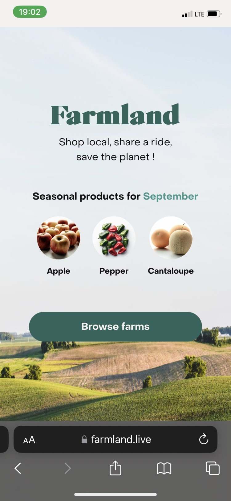
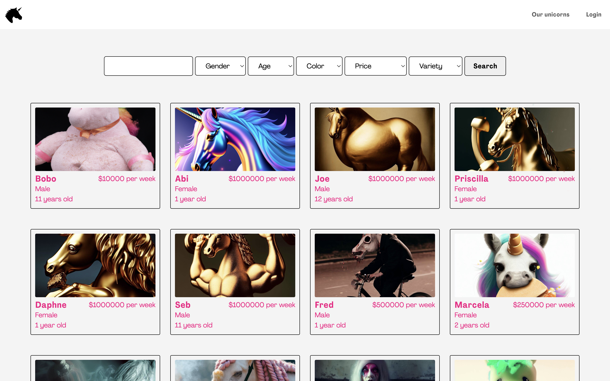

Full Stack Developer based in Vancouver, BC, Canada
I just graduated from UBC with a major in Economics and Co-op Designation. I am passionate about sustainability and start-up development, so I co-founded Brokol App. Now I'm starting a new and exciting chapter on full stack development.
Along with a team of three other developers, I built a responsive web app in the course of seven days. Farmland connects customers with nearby local farms, with exceptional features that enhance the environmental components of carpooling, shopping local and reducing CO2 emissions in real time.
Built a fictitious marketplace to connect users with potential unicorn listings.
